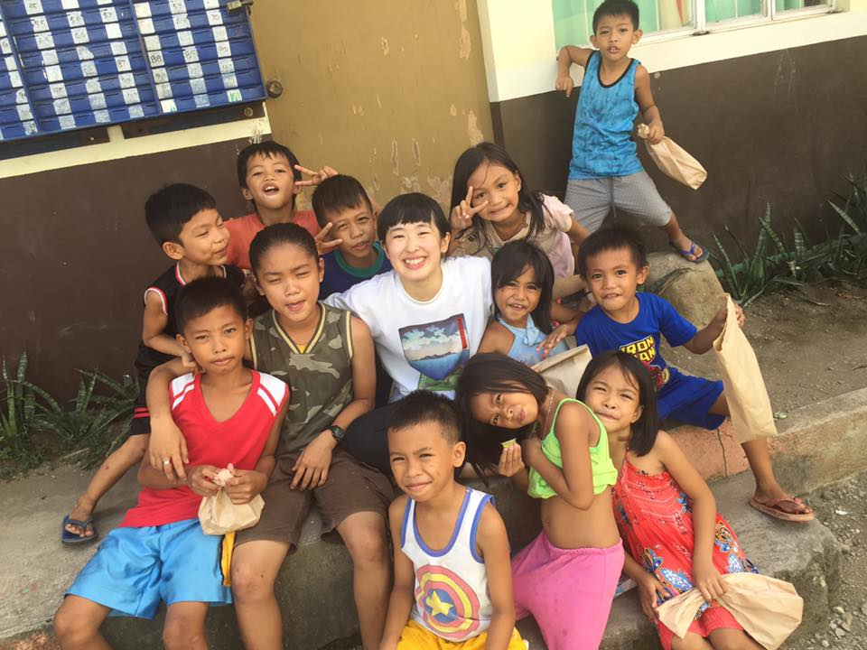
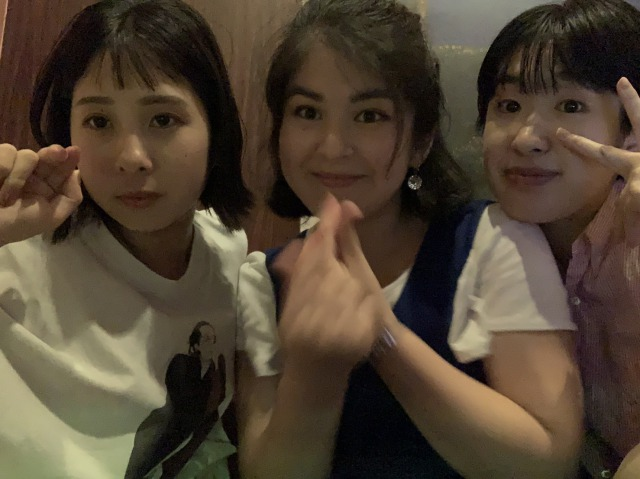

introduce

私立大学に通う大学生です。このコロナの中で将来が不安になり、手に職だと方向転換し、就職活動をしつつ独学でプログラミングを学んでいます。大学では、国際系の学部に所属しつつ、まちづくりや空間デザインに興味があり、卒論執筆中です。スターバックスコーヒーでアルバイトをしており、接客もそうですが、何よりもあの空間でパートナーとして働くことにやりがいを感じています。特に「スタバが好き」と考えている仲間と働くのが非常に楽しく、大学生活のアルバイト選択は大正解でした。
background
大学時代に数多くの国へ訪れ、その度に新しい価値観を身に着けることができました。これは、わたしが学生で初めて行ったフィリピンでの一枚です。初めての海外でバックパック、電気、水のないプレハブで１週間過ごした経験は今でも忘れられず、あの時フィリピンに足を運んでなければ今のわたしはいなかったくらいたくさんのことを学びました。
future
わたしの将来の夢は正直沢山あります。（笑) というよりもやってみたいことが多いのかもしれません。今までも、海外にたくさん行ってみたい！という勢いで10各国は行ってきましたし、YouTuberみたいになりたいと思って一丁前にGoproを買い、編集ソフトも買って編集してみたりと本能や直感に頼って生きてきました。ただ、まだ学生をやっていたい、という訳ではなく、わたしの可能性がどこまで広がっているのかを試してみたいのです。就職活動はゴールではない、とよく言いますが、就職することに対しては社会経験を積む上でも大切だと思います。ですが、どうせ仕事するなら好きなこと、興味のあることに挑戦してみたいと思うのです。少し、将来を軽く見過ぎだって？わたしは屍のように働く人たちよりは好きなことやって少量の給料でも楽しく生きる方がわたしらしくていいなと思います。